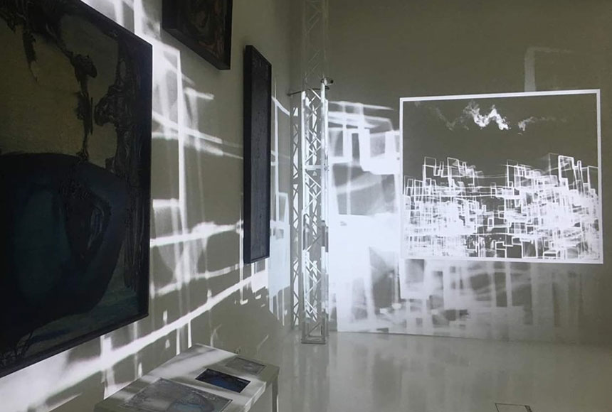

Zobacz, usłysz, dotknij – seanse multimedialne
środa 15:00–16:00 | czwartek 15:00–16:00 | sobota 19:00–20:00
Pawilon Czterech Kopuł zaprasza na wyjątkowy seans multimedialny – 3 kwadranse ze sztuką. Daj się poprowadzić światłem, obrazem, dźwiękiem i słowem.
W ramach Programu Operacyjnego Infrastruktura i Środowisko 2014–2020 w Pawilonie Czterech Kopuł Muzeum Sztuki Współczesnej powstał wyjątkowy pokaz multimedialny. Ścieżce wystawy towarzyszą teraz najnowsze technologie: doskonałe oświetlenie, projektory, nagłośnienie, które pozwalają na dotarcie do wszystkich obszarów percepcji widza.
Odbiór sztuki zostaje wzbogacony multimediami, poszczególne części widowiska prowadzą uwagę widza od mistrzów dwudziestolecia międzywojennego, przez spektakularne projekcje w przestrzeni kopuły wschodniej, bogaty komentarz wizualny i dźwiękowy przy dziełach Henryka Stażewskiego, Tadeusza Brzozowskiego, Zdzisława Beksińskiego, twórców sztuki materii, porywające animacje wokół sztuki Magdaleny Abakanowicz, aż po finał w atmosferze wrocławskiej Grupy Luxus.
Zobacz, usłysz, dotknij to wyjątkowa trasa zwiedzania dla tych, którzy ciekawi są rozszerzania granic sztuki i percepcji przy użyciu najnowszych technologii.
Wstęp z biletem za 25 zł (20 zł bilet ulgowy, 15 zł/os. rodzinny i grupowy). Kup bilet ➸ Prosimy o przybycie 15 minut przed rozpoczęciem seansu.